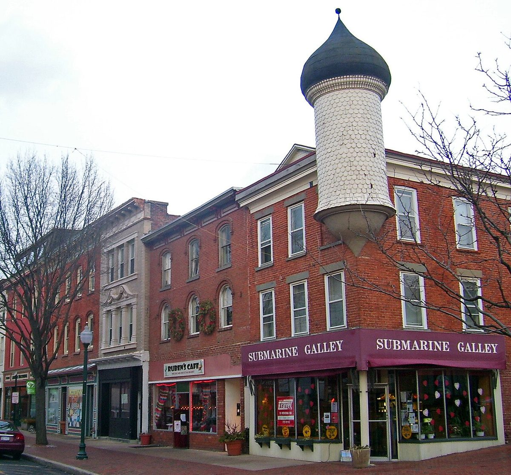

미국 피크스킬 시민단체 공동소유 저수지 수상태양광 1.68MW 철회…비용 늘어 연방 세액공제 시한 못 맞춰

비영리 단체가 절반을 갖고 수익은 모두 시로 가는 구조로 25년 280만 달러 편익 내걸어…식수원 우려 속 계획위원회 조건 붙으며 사업비·공기 불어나
미국 뉴욕주 피크스킬시가 소유한 캠프필드(Camp Field) 저수지에 시민단체가 공동소유하는 1.68MW 수상태양광을 띄우려던 계획이 3년여 만에 철회됐다. 개리슨의 비영리단체 에콜로지컬 시티즌스 프로젝트(Ecological Citizens Project)와 필라델피아의 재생에너지 개발사 워킹파워(Working Power)는 시가 2023년 시유지에 공동체 소유 태양광을 짓겠다며 낸 공모에 참여해 2024년 4월 사업자로 뽑혔다. 단체가 사업 절반을 소유하고 수익은 모두 시로 돌아가는 구조로, 시 임대료와 전기요금 절감, 지역 먹거리 주권 기금을 합쳐 25년 동안 280만 달러의 경제적 편익을 내걸었다. 캐럴 사몰 시 계획개발국장은 10월 15일 계획위원회 회의에서 철회를 알리면서, 사업자들이 필요한 기반시설 보강의 비용과 기간으로는 약속한 지역 편익을 제때 낼 수 없다고 판단했다고 설명했다. 사업자들은 식수원 위험을 줄이려고 계획위원회가 붙인 조건과 상수도 시설 보강으로 공사 기간이 늘어나, 2027년 12월 31일 끝나는 연방 태양광 투자세액공제(사업비의 최대 50%)를 받을 수 없게 됐다고 밝혔다. 식수 오염과 수생태계 영향을 우려한 주민 청원에는 760명 넘게 서명했지만, 제이슨 에인절 에콜로지컬 시티즌스 프로젝트 공동대표는 반대 여론이 철회 이유는 아니었다며 재생에너지의 이익을 지역으로 돌리는 운동은 계속될 것이라고 말했다.
시민에너지 관점
시민단체가 절반을 갖고 수익은 모두 시로 돌리는 공공부지 태양광이 무산된 것은, 좋은 소유 구조만으로는 사업이 굴러가지 않는다는 점을 보여 준다. 식수원 위에 패널을 띄우는 데 대한 주민 우려는 사업자 스스로도 함께한 정당한 걱정이었고, 이번 실패의 원인은 공동체 소유가 아니라 부지 선택과 세액공제 시한에 묶인 일정에 있었던 것으로 보인다. 누가 재생에너지를 소유하느냐가 누가 혜택을 받느냐를 정한다는 원칙은 그대로이며, 공동체 소유 모델은 주민이 받아들이는 부지를 처음부터 함께 고를 때 힘을 얻는다. 국내 지자체도 저수지·공유지 태양광을 추진할 때 부지 선정 단계부터 주민과 함께 식수·생태 기준을 정하고, 큰 지붕처럼 논란이 적은 공공시설부터 시민 공동소유를 시험해야 한다.
출처: Peekskill Herald 2026-10-22 Eric Harvey 원문 보기
米ピークスキル、市民団体が共同所有する貯水池の水上太陽光1.68MWを撤回…費用増で連邦税額控除の期限に間に合わず
非営利団体が半分を所有し収益はすべて市へ、25年で280万ドルの便益を掲げる…飲料水源への懸念の中、計画委員会の条件で事業費・工期が膨らむ
米ニューヨーク州ピークスキル市が所有するキャンプフィールド（Camp Field）貯水池に、市民団体が共同所有する1.68MWの水上太陽光を浮かべる計画が、3年あまりを経て撤回された。ギャリソンの非営利団体エコロジカル・シチズンズ・プロジェクト（Ecological Citizens Project）とフィラデルフィアの再生可能エネルギー開発会社ワーキング・パワー（Working Power）は、市が2023年に市有地で地域所有の太陽光をつくるために行った公募に応じ、2024年4月に事業者に選ばれた。団体が事業の半分を所有し、収益はすべて市に戻る仕組みで、市への賃料、電気料金の節減、地域の食料主権基金を合わせ、25年間で280万ドルの経済的便益を掲げていた。キャロル・サモル市計画開発局長は10月15日の計画委員会の会合で撤回を伝え、事業者が必要なインフラ補強の費用と期間では約束した地域便益を期限内に届けられないと判断したと説明した。事業者側は、飲料水源へのリスクを減らすために計画委員会が付けた条件と上水道施設の補強で工期が延び、2027年12月31日に終わる連邦の太陽光投資税額控除（事業費の最大50%）を受けられなくなったと明らかにした。飲料水の汚染や水生生態系への影響を懸念する住民の請願には760人以上が署名したが、エコロジカル・シチズンズ・プロジェクトのジェイソン・エンジェル共同代表は、反対の声が撤回の理由ではなかったとし、再生可能エネルギーの利益を地域に戻す運動は続くと語った。
市民エネルギーの視点
市民団体が半分を持ち、収益をすべて市に回す公有地の太陽光が頓挫したことは、優れた所有構造だけでは事業が回らないことを示している。飲料水源の上にパネルを浮かべることへの住民の懸念は事業者自身も共有した正当な心配であり、今回の失敗の原因は地域所有ではなく、用地の選び方と税額控除の期限に縛られた日程にあったとみられる。誰が再生可能エネルギーを所有するかが誰が恩恵を受けるかを決めるという原則は変わらず、地域所有のモデルは住民が受け入れられる用地を最初から一緒に選ぶときに力を持つ。韓国の自治体も貯水池や公有地での太陽光を進める際は、用地選定の段階から住民とともに飲料水・生態の基準を定め、大きな屋根のように論争の少ない公共施設から市民共同所有を試すべきだ。
出典: Peekskill Herald 2026-10-22 Eric Harvey 原文を読む
美国皮克斯基尔市民团体共同拥有的水库1.68MW漂浮式太阳能项目撤回…成本上升赶不上联邦税收抵免期限
非营利团体持有一半、收益全部归市政府，曾承诺25年280万美元效益…饮用水源担忧下规划委员会附加条件，项目费用和工期膨胀
在美国纽约州皮克斯基尔（Peekskill）市所有的Camp Field水库上建设由市民团体共同拥有的1.68MW漂浮式太阳能电站的计划，在筹备三年多后被撤回。位于加里森的非营利组织Ecological Citizens Project与费城的可再生能源开发商Working Power，参加了市政府2023年为在市有土地上建设社区所有太阳能而发起的征集，并于2024年4月被选为开发方。按照计划，该团体持有项目一半股份，收益全部回到市政府，市政府租金、电费节省和地方食物主权基金合计，可在25年内带来280万美元的经济效益。市规划发展局长Carol Samol在10月15日的规划委员会会议上宣布撤回，并解释说，开发方判断以必要基础设施升级的成本和工期，无法按时兑现承诺的社区效益。开发方表示，规划委员会为降低饮用水源风险而附加的条件和供水设施升级拉长了工期，使项目无法赶上2027年12月31日到期的联邦太阳能投资税收抵免（最高可达项目费用的50%）。担心饮用水污染和水生生态影响的居民请愿获得760多人签名，但Ecological Citizens Project共同负责人Jason Angell表示，反对意见并不是撤回的原因，把可再生能源利益带回社区的运动将继续下去。
市民能源视角
由市民团体持有一半、收益全部归市政府的公有土地太阳能项目夭折，说明仅有好的所有权结构，项目并不能自然运转。居民对在饮用水源上漂浮光伏板的担忧，是连开发方也认同的正当顾虑；这次失败的原因看来不在社区所有，而在选址和受税收抵免期限束缚的日程。谁拥有可再生能源决定谁受益，这一原则并未改变；社区所有模式要在一开始就与居民一起挑选他们能接受的场地，才会有力量。韩国地方政府推进水库和公有土地太阳能时，也应从选址阶段就与居民共同制定饮用水和生态标准，并从大屋顶等争议较少的公共设施开始试行市民共同所有。
来源: Peekskill Herald 2026-10-22 Eric Harvey 查看原文
Community-owned 1.68MW floating solar plan on Peekskill reservoir withdrawn as rising costs put federal tax credit deadline out of reach
Nonprofit would have owned half with all revenue going to the city, promising 2.8 million dollars in benefits over 25 years; conditions set amid drinking water concerns raised costs and stretched the timeline
A plan to float a 1.68MW community-owned solar array on the city-owned Camp Field Reservoir in Peekskill, New York, has been withdrawn after more than three years in the making. The Garrison-based nonprofit Ecological Citizens Project and Philadelphia-based renewable developer Working Power answered a 2023 city request for proposals to build community-owned solar on municipal property and were selected in April 2024. Under the plan the nonprofit would have owned half of the project with all revenue going back to the city, promising 2.8 million dollars in economic benefits over 25 years through lease payments to the city, electricity bill savings and a local food sovereignty fund. Peekskill Director of Planning and Development Carol Samol announced the withdrawal at the Planning Commission meeting on Oct. 15, explaining that the applicants had concluded the cost and timing of the necessary infrastructure upgrades would not let them deliver the promised community benefits in time. The developers said conditions the Planning Commission set to reduce risks to the drinking water supply, along with water infrastructure upgrades, stretched construction so far that the project could not qualify for the federal solar investment tax credit, worth up to 50% of project costs and set to expire after Dec. 31, 2027. More than 760 people signed a residents' petition citing drinking water contamination and harm to aquatic ecosystems, but Ecological Citizens Project co-director Jason Angell said opposition did not drive the decision and that the movement to bring renewable energy's economic benefits back to communities will continue.
Citizen Energy View
The collapse of a public-land solar project in which a nonprofit would have owned half and the city all the revenue shows that a good ownership structure alone does not get a project built. Residents' worries about floating panels on a drinking water reservoir were legitimate concerns the developers themselves shared, and the failure appears to stem not from community ownership but from site choice and a schedule tied to a tax credit deadline. The principle that whoever owns renewable energy decides who benefits still holds, and community ownership gains strength when residents help choose an acceptable site from the start. Korean local governments pursuing solar on reservoirs and public land should set drinking water and ecological standards together with residents from the site selection stage, and test citizen co-ownership first on less contested public facilities such as large roofs.
Source: Peekskill Herald 2026-10-22 Eric Harvey Read the original